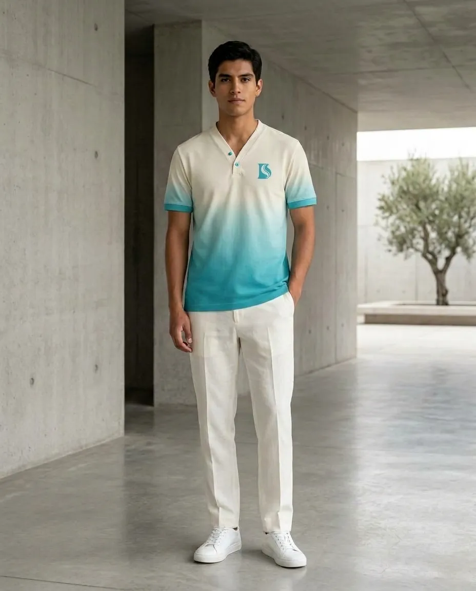
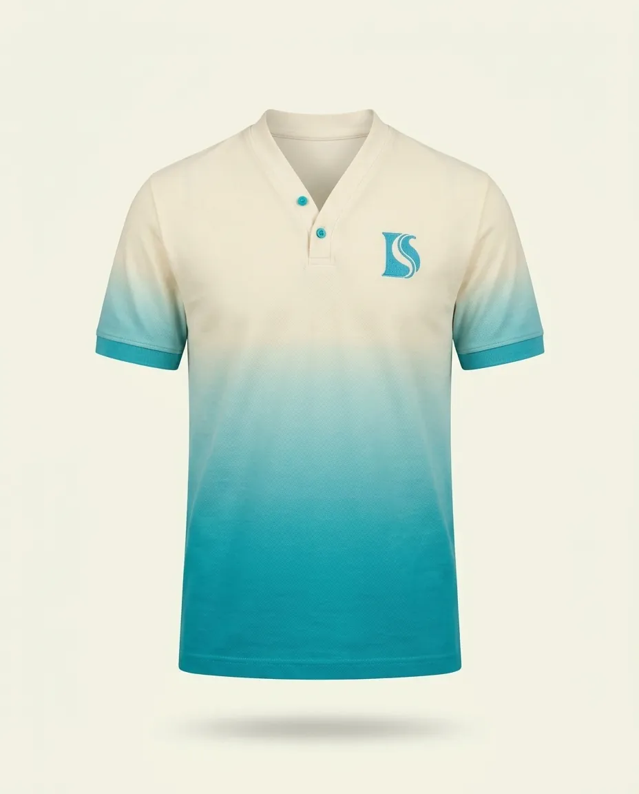
Línea Esencia
Polo Esencia Turquesa
Polo con degradado vertical de crema a turquesa y el monograma D+S en el pecho.
Design Salms S.A.C. · Pichanaqui, Junín
Moda cristiana contemporánea: ropa con diseños inspirados en la fe, hecha para tu día a día.
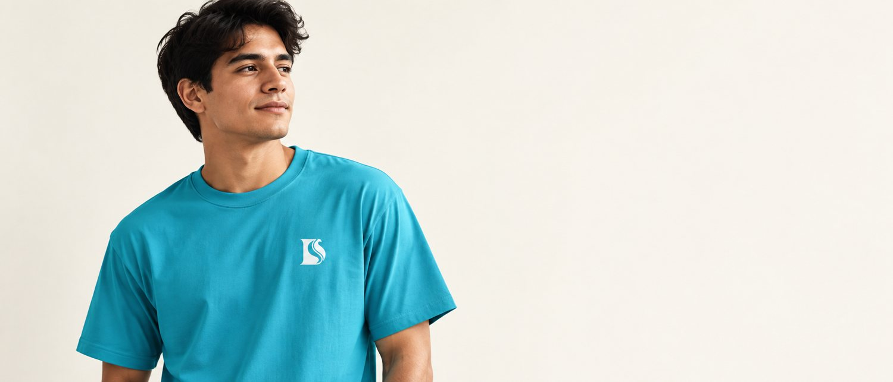

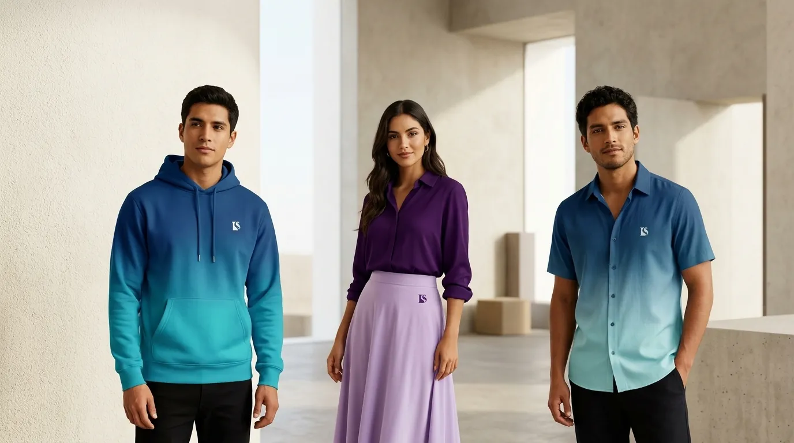
Moda cristiana contemporánea
D'Salms combina moda, creatividad, identidad y fe, y se aleja de la estética tradicional de algunas marcas de ropa cristiana.

Tres líneas conceptuales
Esencia, Fe y Palabra: tres maneras de llevar la identidad de D'Salms en una prenda.

Moda minimalista: degradados, bloques de color y monograma discreto.
Ver diseños
Mensajes breves y bien compuestos: una palabra, una frase.
Ver diseños
Referencias bíblicas discretas, verificadas antes de producir.
Ver diseños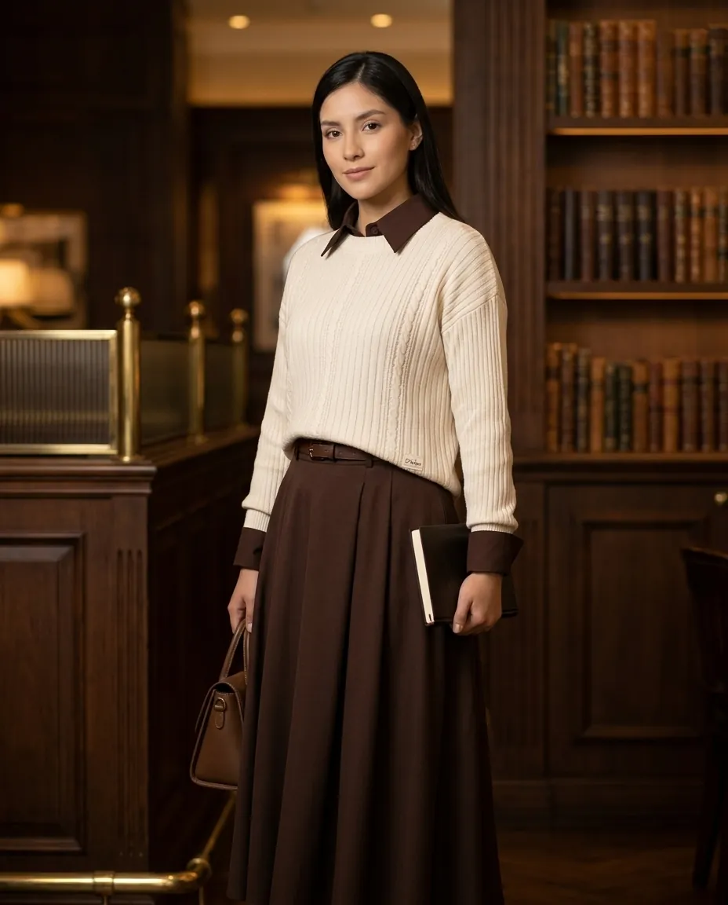
Conjuntos casuales, elegantes y contemporáneos.
Ver diseñosProductos destacados
Una selección de la colección conceptual de D'Salms, masculina y femenina.


Polo con degradado vertical de crema a turquesa y el monograma D+S en el pecho.
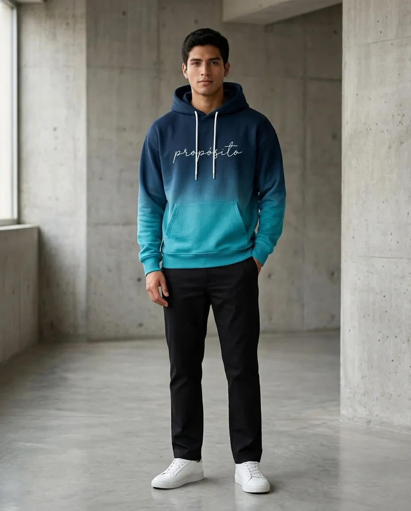
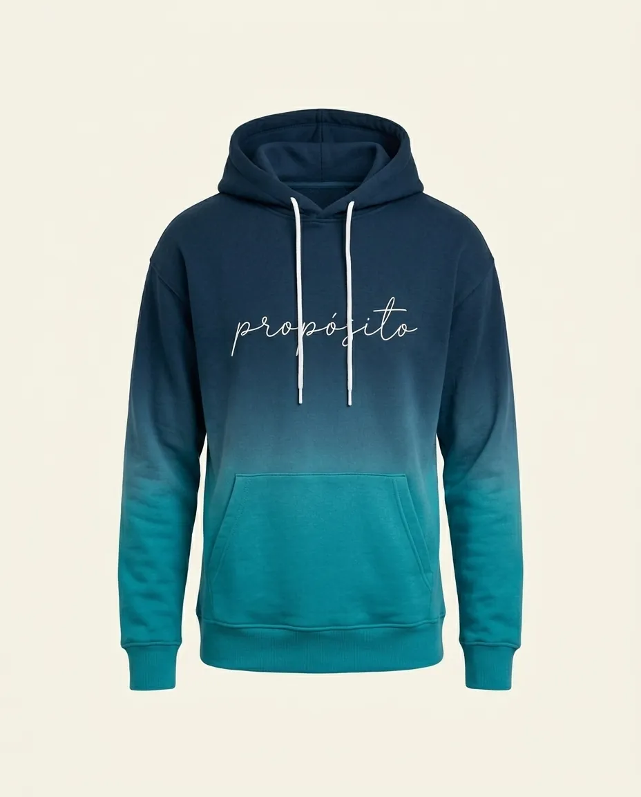
Hoodie con degradado de azul profundo a turquesa y la palabra «propósito» en caligrafía sobre el pecho.
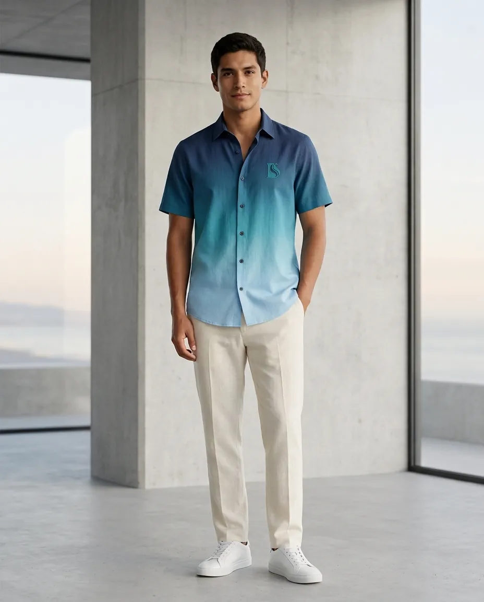
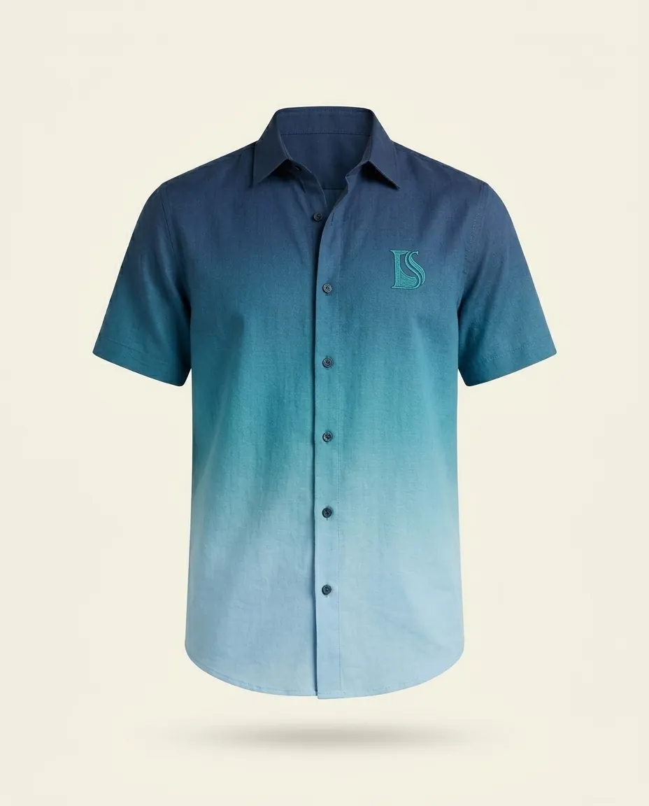
Camisa con degradado de azul profundo a celeste, inspirada en la línea del horizonte.
Suéter de punto crema, camisa y falda amplia en tonos chocolate: un conjunto sobrio y cálido.
Del boceto a tu prenda
Cada prenda parte de una idea y un mensaje. Cuidar el detalle: materiales, acabados y presentación coherentes.
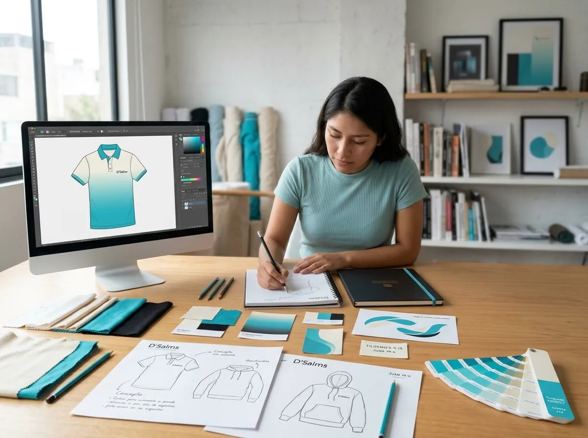


Explora el sitio
Recorre la identidad, la comunicación y el plan de D'Salms.
Quiénes somos: misión, visión y valores corporativos.
Público objetivoA quién nos dirigimos: jóvenes y adultos que quieren vestir su fe.
Identidad corporativaIdentidad, imagen y personalidad de la marca.
Identidad visualImagotipo D + S, proceso de diseño, colores y tipografías.
Imagen institucionalLa percepción que D'Salms desea construir.
AplicacionesLa marca en prendas, packaging y espacios (mockups propuestos).
ComunicaciónTono de voz, frases, canales y piezas de comunicación.
Plan de Comunicación CorporativaDiagnóstico, objetivos, acciones, presupuesto y KPIs en 15 apartados (propuesta académica).
Manual de identidad corporativaEl sistema de identidad reunido en un solo lugar.
Propuestas de mejoraCómo puede D'Salms fortalecer su identidad.
ContactoRedes, correo y WhatsApp (por definir).
Auditoría de Imagen CorporativaSeis capítulos: proceso de cinco etapas, plan de investigación y una encuesta anónima del estudio.
Productos y coleccionesTres líneas conceptuales con 12 diseños de prendas: Esencia, Fe y Palabra.
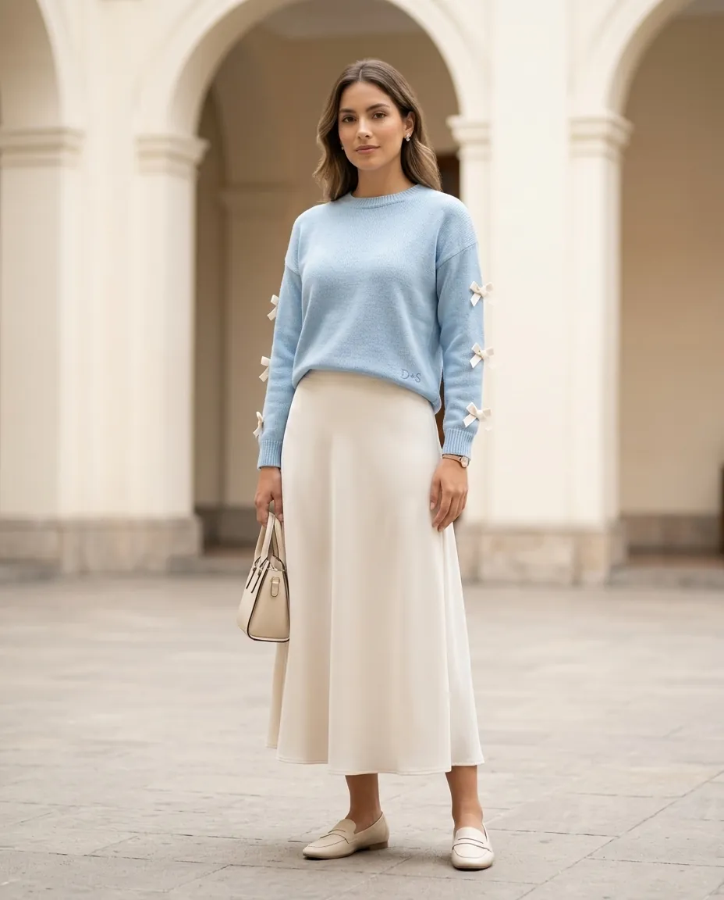
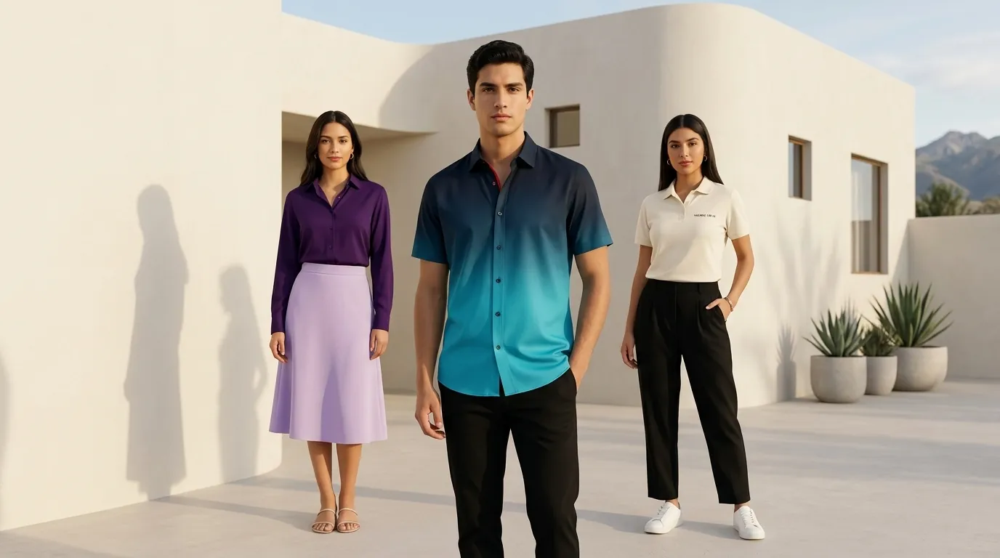
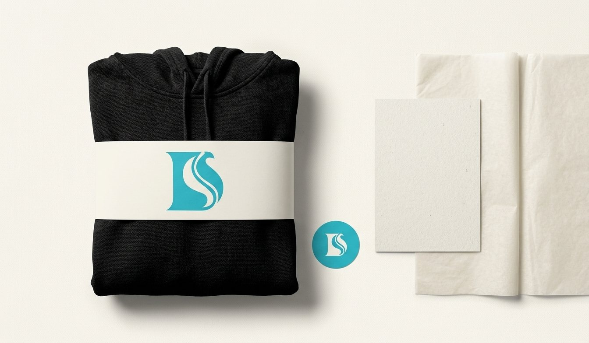
Cada apartado integra imágenes, color y movimiento para mantener la experiencia visual viva en todo el sitio.
EDITORIAL D’SALMS / ARCHIVO 2026
Fotografías, diseño y aplicaciones originales del universo visual de D’Salms.


LA MARCA EN MOVIMIENTO
Exploración audiovisual de nuestro símbolo y su universo cromático.
CIERRE VISUAL
D’Salms mezcla turquesa, rojo, morado, negro y crema para crear una experiencia visual dinámica y contemporánea.
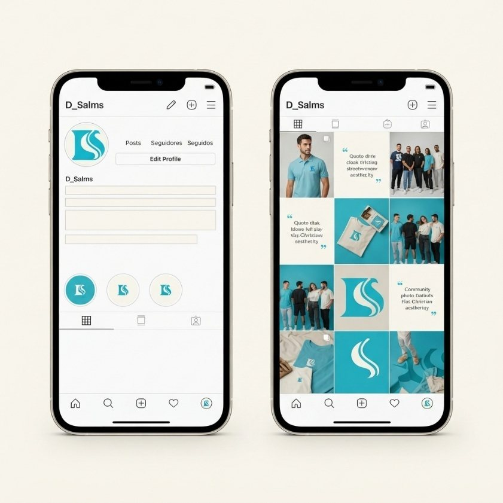